| 日付 | 2025年12月7日（日） |
|---|---|
| 山域 | 御坂･天子山塊 |
| メンバー | 単独 |
| 山行形態 | 日帰り |
| アクセス | 電車 |
| ルート (Map) | 東桂駅 (9:45) - (10:10) 古城山 - (11:27) 都留アルプス山 (11:46) - (12:03) 楽山公園 - (12:52) 鍛冶屋坂水路橋 - (13:33) 蟻山 - (13:49) 富士山展望台 (14:08) - (14:20) 都留市駅 |
本日は、夜に山の旧友と飲み会。一日が長いので軽めの山に行くことにする。
目を付けたのは最近知った都留アルプス。駅から駅まで歩くことができる。
東桂駅に到着。標高560m。
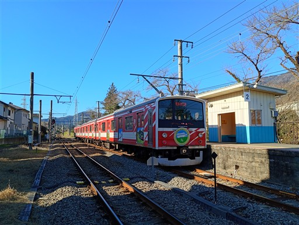
車道を歩いて登山口を目指す。
三ツ峠山がきれいに見えている。本日は快晴だ。
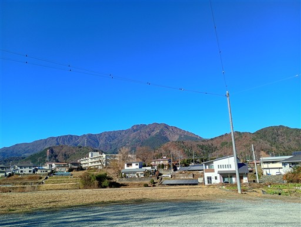
早作の石仏群。石仏が並んでいる。
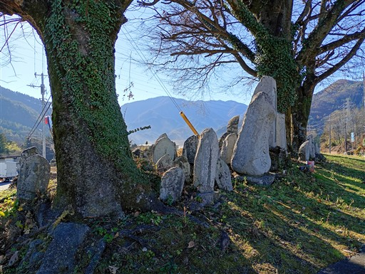
車道の左手に大きな淵が現れて目を引く。なぜこんな大きな淵ができたのか不思議だ。
おなん淵の滝という名が付けられているらしい。
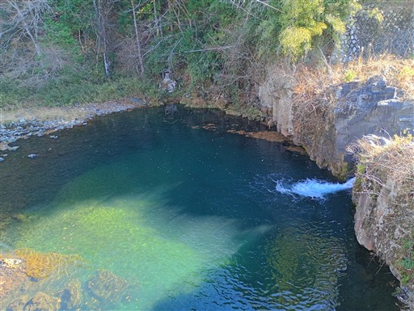
しばらく車道を歩くと登山口に到着する。
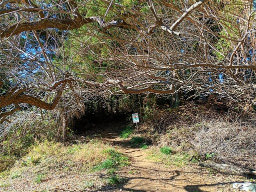
歩き始めてすぐに、住吉神社の赤い鳥居が現れる。
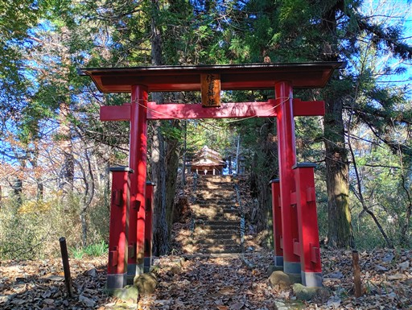
素朴な小さな神社だ。
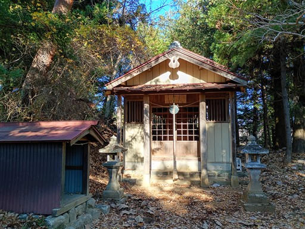
そのすぐ先にある古城山。標高583m。
かつてここに城があったのだろうか？
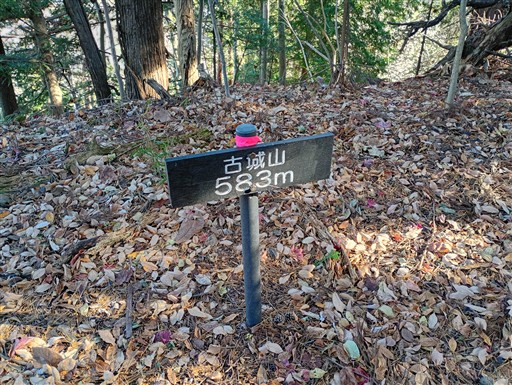
急な下り坂。案外歩きにくい道だ。
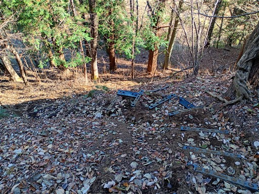
斜面を下った先は、人気のない平らな空間が広がる。
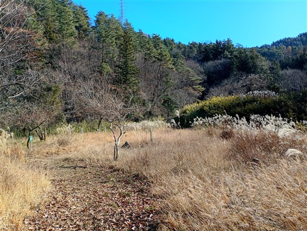
今一必要性を感じない小さな丸太橋。
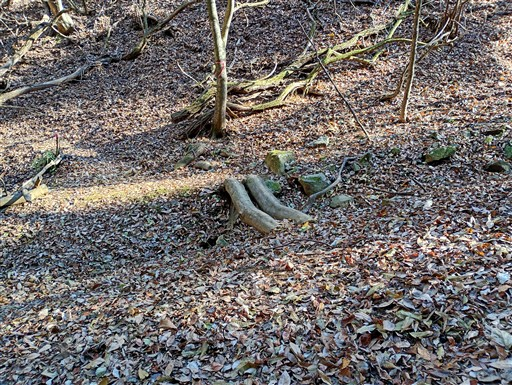
観察小屋の跡。なぜ使われなくなったのだろう？
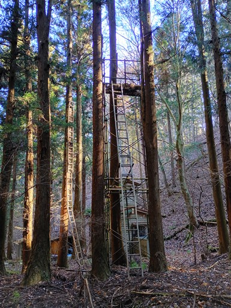
野球場のグラウンドが見える。
野球ではなかったが、息子と毎週スポーツの練習に付き添ったのを思い出す。
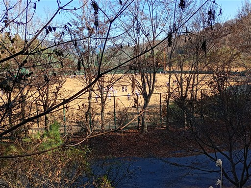
山裾を歩く道が続く。歩いていて全く面白くない道だ。
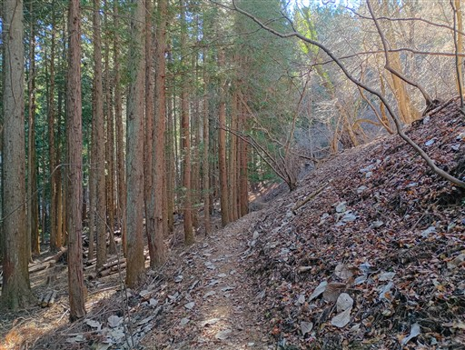
都留アルプス山に到着する。標高713m。本日の最高峰。
全く展望は広がらないが、ここで昼食をとることにする。
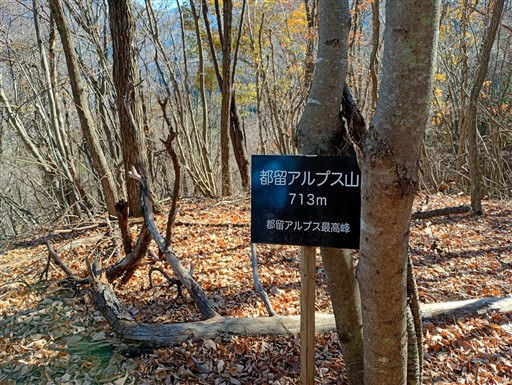
しばらく歩くと木が伐採されていて、ようやく展望が広がる。
滝子山～黒岳の稜線が見えている。
山と山の間の狭い場所に町が続いているのが良く分かる。
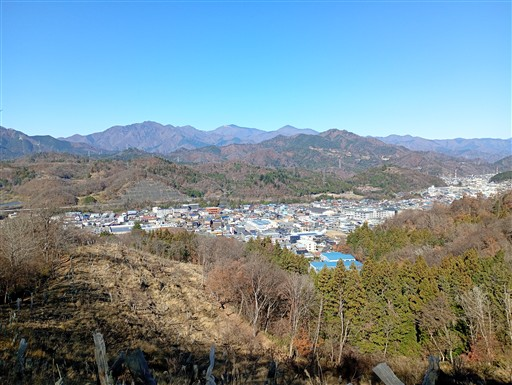
少し足を延ばして楽山公園に行ってみる。
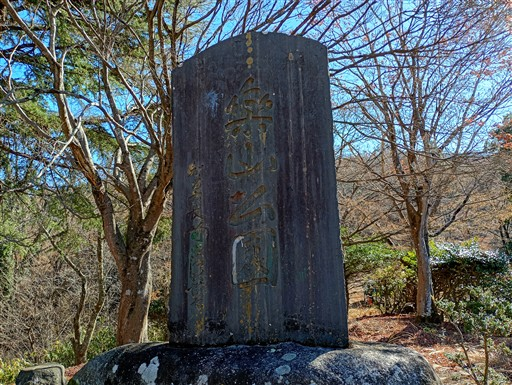
東屋があるのみで、他に何もない公園だ。
少し休憩したら引き返す。

分岐点に戻ったら先に進む。しばらくは展望の良い道が続く。
見えているのは三ツ峠山だ。
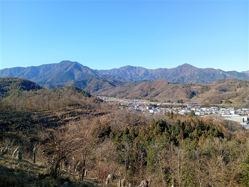
植生が変わって少し笹が出てくる。
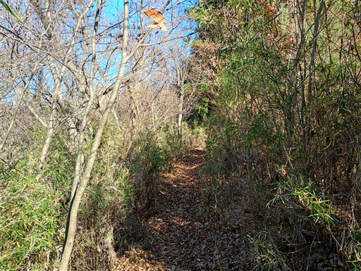
鞍部に下ると突然現れる古そうな橋。これは一体何だろう？
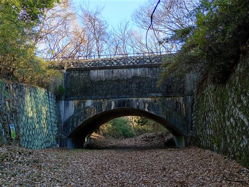
ここは峠で、周囲には石仏や祠が祀られている。
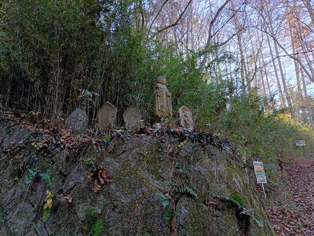
斜面を登ると橋の上部にでてくる。水道橋のようだが、正体は謎。
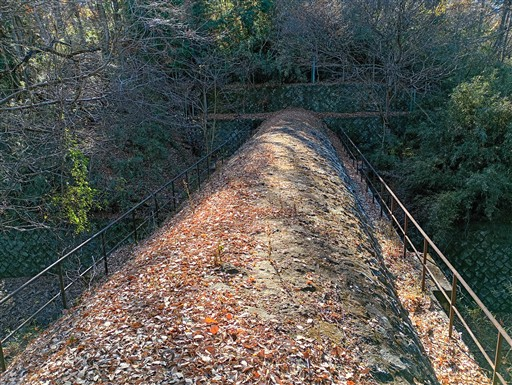
この辺りから、登山道は美しい尾根道になる。
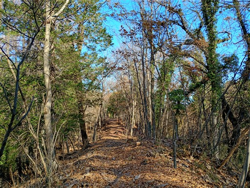
再び現れる巨大な水道。
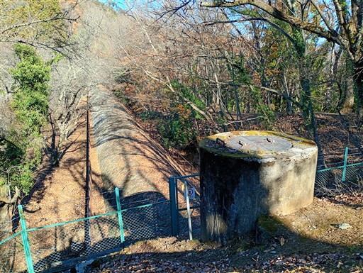
そして再び現れる水道橋。重厚な橋だ。
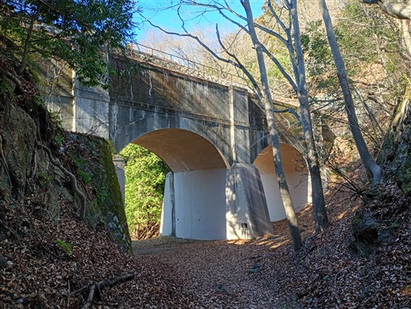
説明書きを見てようやく正体が分かる。
水力発電所に水を届けるための設備で、大正時代に造られたもののようだ。
驚いたことに、今でも現役で稼働中らしい。
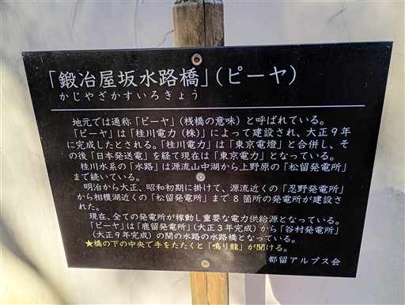
この場所にも石仏が並んでいる。
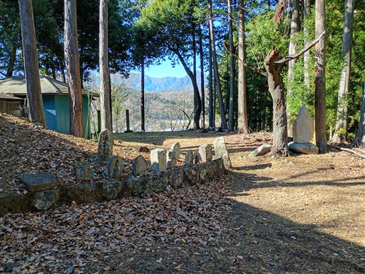
大室神社。後ろに水道橋が見える、不思議な景観だ。
この神社についている蛍光灯は必要あるのだろうか？

神社の中を覗いてみる。横から光が差し込んでいて美しい。
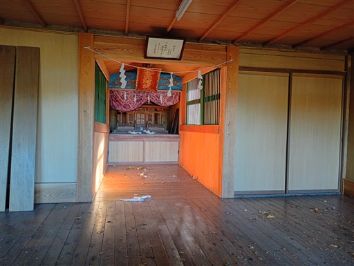
水路橋そばの階段を登ってみたが行き止まり。
なぜか登山道に向かう道は通行止と書かれており、引き返す。
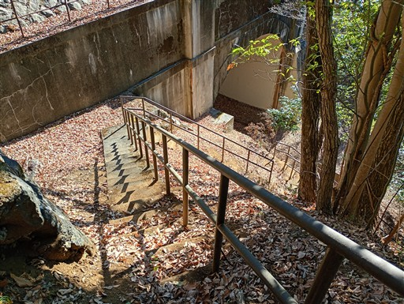
改めて登山道に復帰し、先に進む。
次の見所はパノラマ展望台。
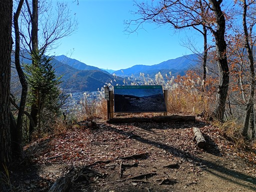
桂川沿いに広がる集落が見渡せる。
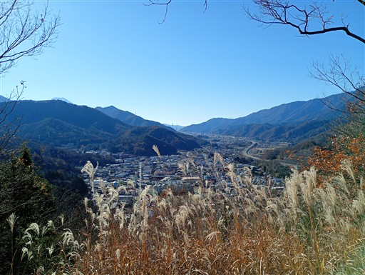
ここからは富士山の頭がほんの少しだけ見える。
そばに都留アルプスの解説が書かれている。地元の有志によって2017年に開かれた登山道らしい。
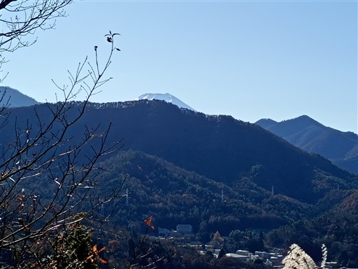
美しい尾根道が続く。左右から町が迫る、その間の狭い山域だ。
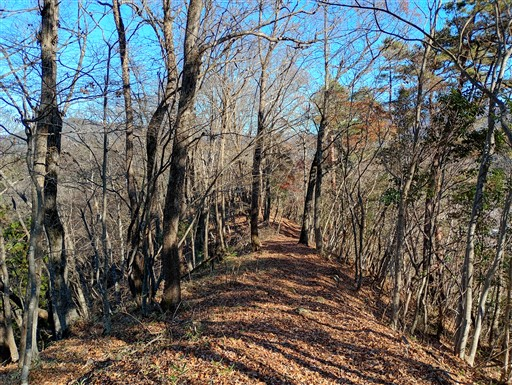
蟻山に到着。標高658m。
ここはかつて烽火台があったらしい。
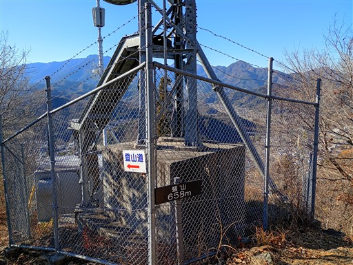
ここまで登ると、だいぶ富士山が見えるようになる。
富士山の左に見えているのは杓子山だ。
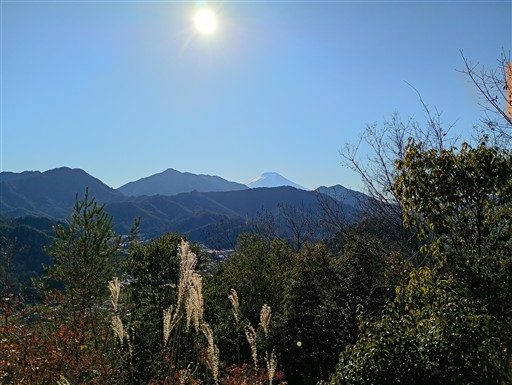
ちょっとした岩場を超える。
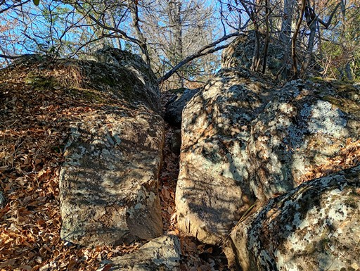
さきほど見た水道の終端と思われる場所に出てくる。
ここから水は斜面を流れ下って、発電に利用されているのだろう。
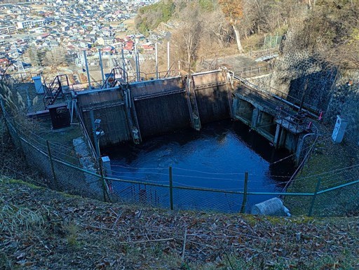
富士山展望台でおやつ休憩を取る。逆光なのが残念だ。
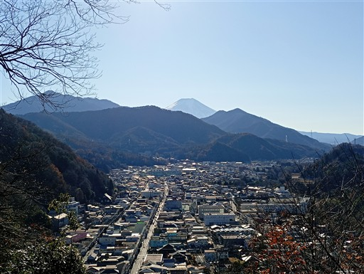
あとは少し下ればもう下界。滑りやすい斜面を下っていく。
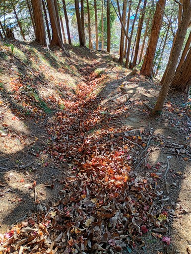
下った場所にある西凉寺。新しそうな建物だ。
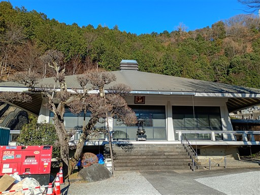
都留市駅に到着。標高470m。
時間が余ってるので、のんびり歩いていると踏切の警報音が聞こえてくる。
電車が遅れていたようで、慌てて予定より一本速い電車に乗る。
都留アルプスは前半はとてもつまらなかったが、後半は美しい尾根道や
展望、水道橋など見所があり楽しい道だった。逆コースで半分だけ歩くのが良いかもしれない。
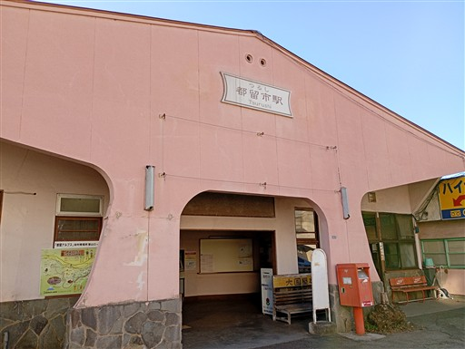